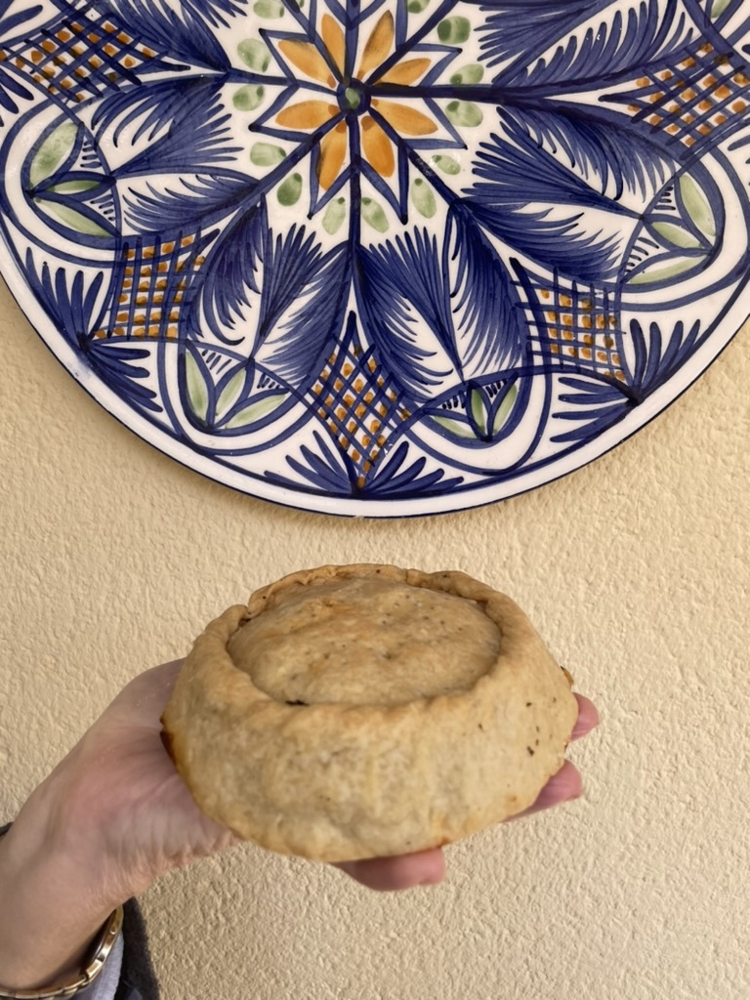
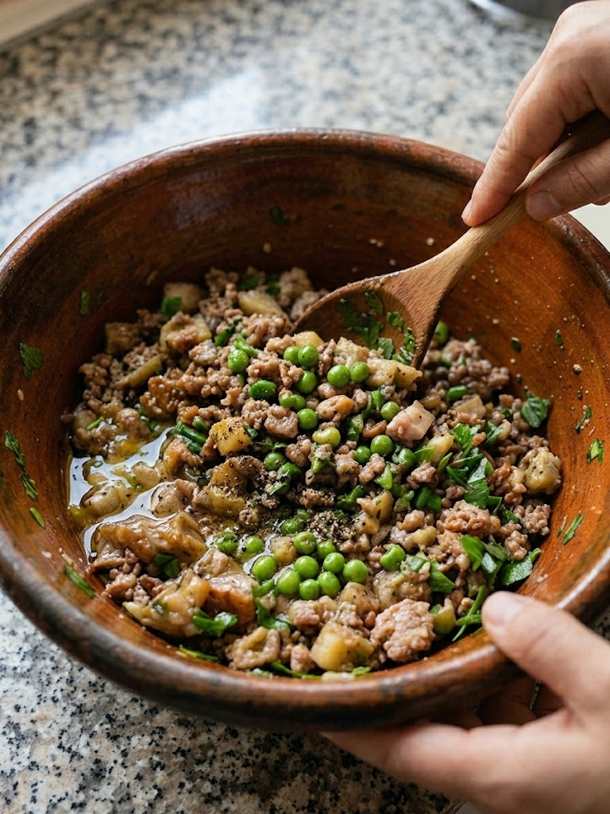
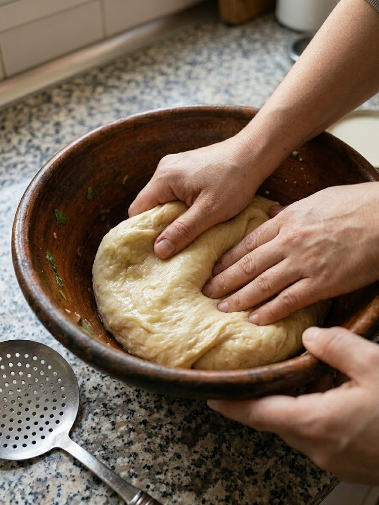
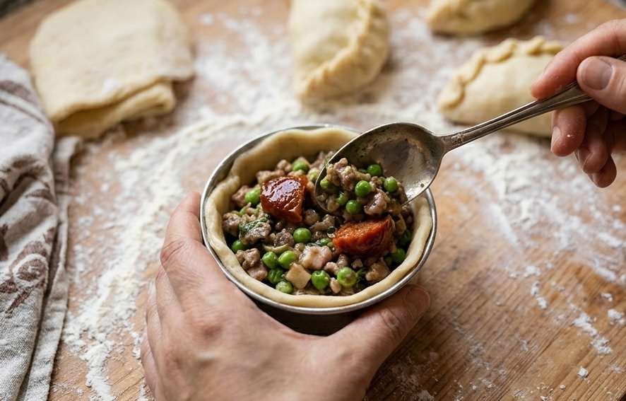

Panades de mè

Ingredients (per unes 12 panades)
Per a sa massa:
- 1 kg de farina de rebosteria (millor si és sa des me vermell)
- 250 g de saïm
- ½ tassó d’oli (pot ser de gira-sol, d’oliva suau o una mescla dels dos)
- 1 tassó i mig d’aigua tèbia
Per es farcit:
- 1 kg aproximadament de carn de mè o de porc (o mesclada)
- 750 g de pèsols
- Sobrasada (a bocins)
- Pebre bo
- Sal
- Oli d’oliva
Elaboració
1. Preparar es farcit
- Trossejau la carn ben petita. Trempau-la với oli d’oliva, bastant de pebre bo i un poc de sal.
- A part, trempau els pèsols với sal i un rajolí d’oli, i mesclau-los amb la carn.
- Deixau-ho reposar unes hores (o millor d’un dia per l’altre) perquè prengui gust.
2. Fer sa massa
- Posau la farina dins un ribell gros.
- Afegiu-hi es saïm, l’oli i, a poc a poc, l’aigua tèbia mentre anau amassant.
- Treballau la massa fins que quedi llisa i homogènia — ni massa dura ni massa fluixa. Si fa falta, afegiu-hi un poc més de farina o d’aigua.
3. Muntar ses panades
- Feis una bolla petita de massa i donau-li forma de base (com un tassonet).
- Ompliu-la amb una cullerada de mescla de carn i pèsols, i un o dos bocins de sobrassada per enmig.
- Amb un altre tros de massa, feis la tapadora i tancau els costats fent el repulgat (el pessic típic de les panades).
4. Enfornar
- Posau paper de forn damunt la llauna i col·locau-hi ses panades.
- Enfornau-les a mitja altura, amb el forn preescalfat a 185 °C, durant aproximadament una hora, fins que siguin daurades i cuites per dins.





